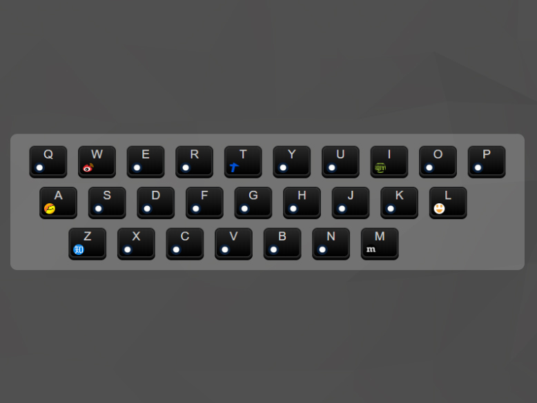
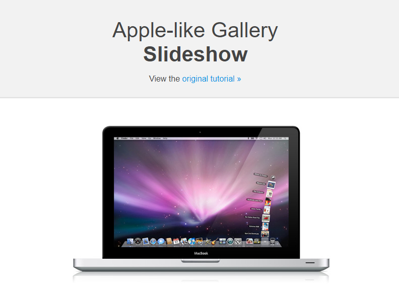
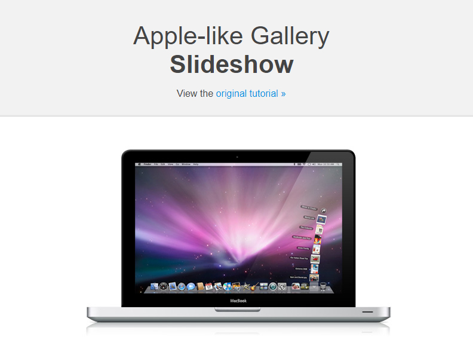
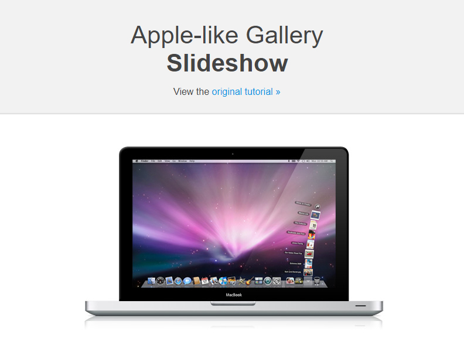

RS
card
关于
技能
作品
作品1
作品2
作品3
博客
博客1
博客2
博客3
日历
联系方式
其他
Hello
刘松
2019届毕业生
学历
本科
毕业学校
温州大学
邮箱
lausean561@gmail.com
手机
***-****-****
下载 PDF 简历
刘松，2019届应届毕业生。
技能：前端开发，移动端开发，Node.js 开发
技能
HTML 5 & CSS 3
JavaScript
jQuery
Vue
React
Node.js
作品集


<
 
